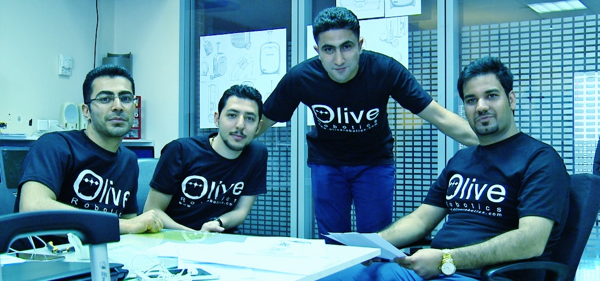
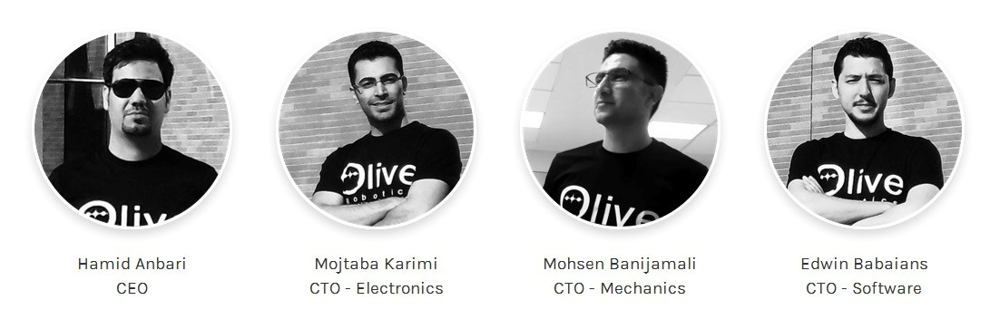
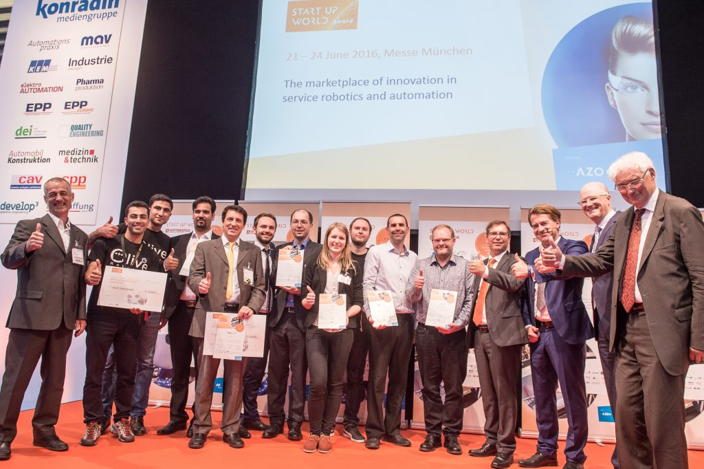

The intelligent suitcase can communicate with your smart phone and share its weight and position. Self-locking system with NFC technology helps to secure your baggage everywhere. It can detect individuals through the use of its 3D vision sensor and follow a moving target. Olive uses a two-wheel self-balancing active locomotion system to help you be faster, and more efficient. Last but not least, it can be a scooter-case which is able to carry you. Olive is the perfect personal robotic companion for traveling and is the world's first intelligent suitcase.
Safety, facility and reliability compliance is our priority!
Olive Suitcase is a Smart Semi-Autonomous Connected Carry-on. The Olive Suitcase is a two-wheeled, self-balancing, battery-powered electric smart suitcase. Users can control their suitcase movement very easy and safe. It has a digital lock that allows users to lock and unlock the suitcase from a phone app or using the NFC technology in their phone or smart watch. The vision sensor automatically locks the bag when it is separated from the user. The 3D vision system allows Olive Suitcase to follow its owner automatically just when the user activates it.
My responsibilities in project:
- CTO of software and Co-founder of OliveRobotics
- Human following and recognition
- Olive Android/IOS application
- Device communication manager (DCM)
- Project prototype rendering
- 3D vision and depths understanding
- Announcement video editor and director
Olive Robotics 2016The tramWith this novel approach we can successfully follow the certain target even in occlusions or target lost situations. We don’t use any classification methods directly so we don’t need any training data before robot operation and robot can perform the follow tasks autonomously exactly after the first skeleton is tracked by skeleton tracker. Here the link for our last paper in IEEE which is describes the detail of this algorithm for human tracking.
Skeleton and visual tracking fusion for human following task of service robots
I would like to inform you that Olive Robotic Suitcase designed by IKAP-Robotics ranked 1st place at the Automatica Start-up World competition 2016 in Germany.
For more information please visit the IkapRobotics/Olive webpages :
www.ikaprobotics.com
www.oliverobotics.comAutomatica 2016, Munich, GermanyOlive Intelligent suitcase
The Olive App
The Story